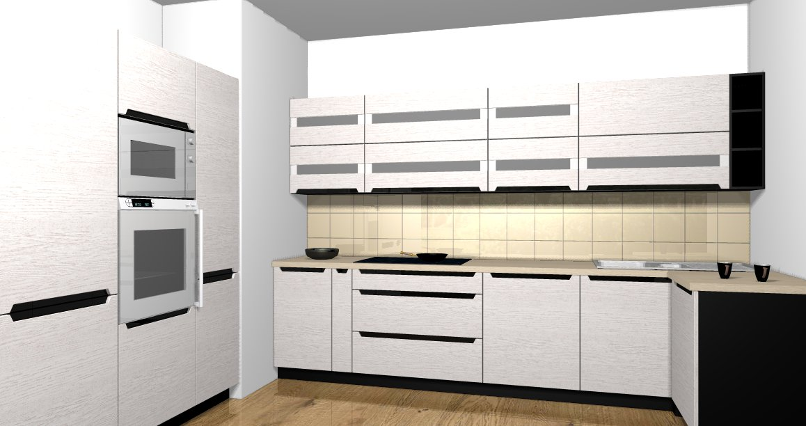

Projekt zawiera opracowanie wnętrza kuchni o powierzchni 12,5m2. Zabudowa kuchni zaprojektowana została z użyciem mebli modułowych. Wysokość całej zabudowy kuchennej to 2103mm. Blaty robocze osadzone są na wysokości 883mm, co oznacza, że przeznaczone są dla użytkowników o wyższym wzroście.
Korpusy szafek kuchennych wykonane z płyty wiórowej o grubości 16mm. Fronty wykonane są z fornirowanej płyty wiórowej . Całkowita grubość frontu to 18mm. Uchwyty ze szkła mlecznego i ciemno-brązowego wbudowane są we fronty dodając kuchni nowoczeny wygląd. Blaty o grubości 38mm łączone są ze sobą śrubami na imbus.
Sprzęty AGD zostały zabudowane. We wszystkich szufladach oraz zawiasach mebli zainstalowane są ciche domyki. Dodatkowymi elementami wyposażenia kuchni są: wysuwana zabudowa z koszami cargo (2-poziomowe kosze) w szafce o szerokości 150mm oraz wewnętrzne szuflady z modułowymi akcesoriami w wysokiej szafce o szerokości 600mm.
